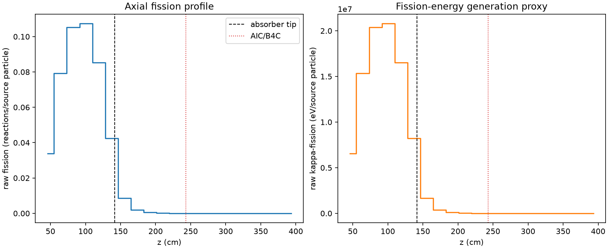
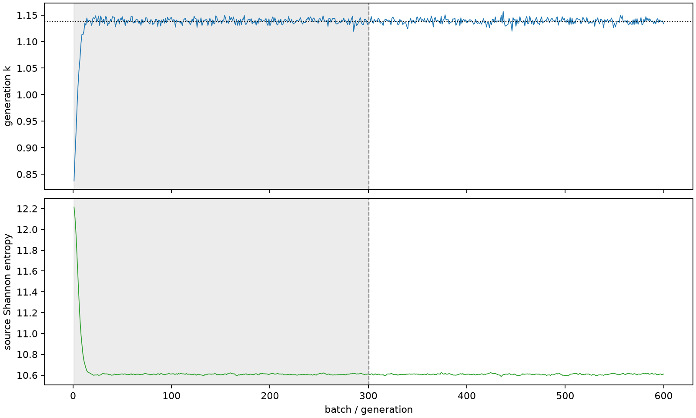

| field | value |
|---|---|
| experiment | V2-STAGE_256_OGRENCI_02-0006 |
| k | 1.1380610107209232 |
| MC standard error | 0.00017864830596798524 |
| seconds | 980.6992929389962 |
| acceptance | not_assessed |
| convergence | review_required |
Completed is output integrity only; physical and statistical review required. Zero tallies do not prove zero production or zero uncertainty.
| diagnostic | value |
|---|---|
| geometric fuel voxels | 5280 |
| zero fission tally voxels | 1607 |
| low signal fuel voxels | 2636 |
| low signal fission share | 8.180096392256759e-05 |
| low signal kappa share | 8.182770741893356e-05 |
| important fission share | 0.950057206199346 |
| previous filter included | 2644 |
| duration estimate s | 1562.5173488400023 |
| actual minus estimate s | -581.8180559010061 |
| fission relative MC error | statistics |
|---|---|
| all_geometric_fuel | {"voxels": 5280, "positive_mean_voxels": 3673, "zero_mean_voxels": 1607, "undefined_relative_error_voxels": 1607, "median": 0.017744590139250345, "p95": 0.9761241778371723, "maximum": 1.0000000000000002} |
| low_signal | {"voxels": 2636, "positive_mean_voxels": 1029, "zero_mean_voxels": 1607, "undefined_relative_error_voxels": 1607, "median": 0.5798990773345118, "p95": 1.0, "maximum": 1.0000000000000002} |
| important_95pct | {"voxels": 1487, "positive_mean_voxels": 1487, "zero_mean_voxels": 0, "undefined_relative_error_voxels": 0, "median": 0.005475631856786301, "p95": 0.008498565574666403, "maximum": 0.009536716346421314} |
| outside_previous_filter | {"voxels": 2636, "positive_mean_voxels": 1029, "zero_mean_voxels": 1607, "undefined_relative_error_voxels": 1607, "median": 0.5798990773345118, "p95": 1.0, "maximum": 1.0000000000000002} |
| kappa_fission relative MC error | statistics |
|---|---|
| all_geometric_fuel | {"voxels": 5280, "positive_mean_voxels": 3673, "zero_mean_voxels": 1607, "undefined_relative_error_voxels": 1607, "median": 0.017714729350563726, "p95": 0.9758546109437679, "maximum": 1.0000000000000002} |
| low_signal | {"voxels": 2636, "positive_mean_voxels": 1029, "zero_mean_voxels": 1607, "undefined_relative_error_voxels": 1607, "median": 0.5792237401629856, "p95": 1.0, "maximum": 1.0000000000000002} |
| important_95pct | {"voxels": 1487, "positive_mean_voxels": 1487, "zero_mean_voxels": 0, "undefined_relative_error_voxels": 0, "median": 0.005469406737791657, "p95": 0.008488577625358849, "maximum": 0.009525009804988736} |
| outside_previous_filter | {"voxels": 2636, "positive_mean_voxels": 1029, "zero_mean_voxels": 1607, "undefined_relative_error_voxels": 1607, "median": 0.5792237401629856, "p95": 1.0, "maximum": 1.0000000000000002} |
| axial bin | fission share | kappa-fission share |
|---|---|---|
| 1 | 0.07286359972064704 | 0.07286592279081938 |
| 2 | 0.17063440149711578 | 0.17063152338165252 |
| 3 | 0.22662059416459102 | 0.22661648319498148 |
| 4 | 0.23097574552736394 | 0.23097136625392128 |
| 5 | 0.18365581182314478 | 0.18365225324964685 |
| 6 | 0.09115853034667615 | 0.09116204392624294 |
| 7 | 0.01836836458693175 | 0.018375237289179315 |
| 8 | 0.004319143753011436 | 0.0043208206515562685 |
| 9 | 0.001058329531382936 | 0.0010587360344086777 |
| 10 | 0.0002624446769125622 | 0.00026255170896215035 |
| 11 | 6.364682370865075e-05 | 6.366905914914953e-05 |
| 12 | 1.5356332756244607e-05 | 1.536138421576256e-05 |
| 13 | 3.225204982489637e-06 | 3.2253009897983044e-06 |
| 14 | 6.830533996973346e-07 | 6.82756582298965e-07 |
| 15 | 9.96969804794269e-08 | 9.964586173448725e-08 |
| 16 | 2.326039513483783e-08 | 2.3371830424417033e-08 |
| 17 | 0.0 | 0.0 |
| 18 | 0.0 | 0.0 |
| 19 | 0.0 | 0.0 |
| 20 | 0.0 | 0.0 |
Histories include the inactive-to-active transition at batch 300. kappa-fission approximates fission energy production, not total heat deposition.

